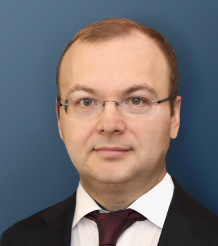
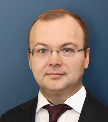

Автономное судовождение. О нас
О центре
Над созданием технологий автономной навигации под эгидой Маринет работает объединение технологических компаний, научных организаций и университетов совместно с судоходными компаниями и государственными органами. При поддержке Минпромторга России мы реализуем самый крупный и амбициозный в мире проектпо автоматическому и дистанционному судовождению.
Создание а-Навигации требует объединения компетенций в области навигации, искусственного интеллекта, машинного зрения, инфокоммуникационных технологий и законодательства. Я горжусь тем, что "Ситроникс КТ" играет ключевую роль в этом проекте, разрабатывая и интегрируя уникальный набор решений для судоходных компаний.
 
Наша миссия
Цель нашего проекта - обеспечить правовые и технологические условия для широкой эксплуатации морских автономных судов (МАНС) судоходными компаниями, начиная с 2021 года. Для этого мы разрабатываем нормативные и технические решения, и проводим их апробацию в реальных условиях коммерческой эксплуатации сразу на нескольких судах.
Я уверен, что развитие новых технологий происходит не за дверями научных лабораторий или технологических компаний, а в руках потребителей. Мы должны открыть возможности для любой судоходной компании легально, безопасно и эффективно использовать средства а-Навигации - и мы увидим настоящий прорыв в этой области.

Наше видение
Наш подход предполагает поэтапное развитие МАНС: Сосуществование, Переход и Доминирование. Как основу для безопасного сосуществования МАНС с традиционными судами мы используем принцип полной функциональной эквивалентности: точное исполнение в автономном режиме всех функций, предписанных сегодня экипажу на борту действующим международным регулированием.
Мы не ждем кораблей-роботов или принципиально новых конвенций ИМО. С помощью принципа полной функциональной эквивалентности мы адаптируем применение технологий а-Навигации к существующему межународному регулированию. Благодаря этому МАНС могут взаимодействовать с другими судами в рамках существующих понятных и обязательных для всех правил.


Наши результаты
Начиная с 2019 года мы одновременно создаем и правовые решения, и технические решения,с помощью которых можно модернизировать любое судно до автономного. Нами разработан ряд уникальных систем, таких как Автономная навигационная система или Оптическая система анализа окружающей обстановки, и мы продолжаем работать над дальнейшим развитием технологий. Разработанный нами подход в области регулирования был принят и поддержан правительством России, благодаря чему, начиная с 2021 года любая судоходная компания сможет легально эксплуатировать МАНС в своей работе.
Даже самые лучшие технологические решения не смогут эффективно применяться без соответствующего нормативного обеспечения. Сотни лет морской законодательство строилось в парадигме присутствия человека на борту. Сегодня мы открываем эру автономных судов с несколькими членами экипажа или даже полностью без экипажа на борту - которые смогут безопасно эксплуатироваться во взаимодействии с традиционными судами.